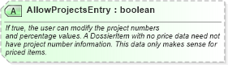

| Definition Type: | Attribute |
| Name: | AllowProjectsEntry |
| Type: | boolean:http://www.w3.org/2001/XMLSchema |
| Containing Schema: | DossierItem.xsd |
| Use | (Optional) |
| Documentation: | If true, the user can modify the project numbers and percentage values. A DossierItem with no price data need not have project number information. This data only makes sense for priced items. |
|  |
|